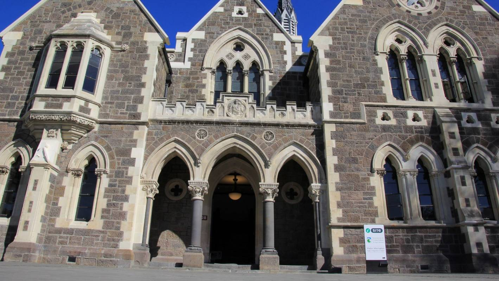
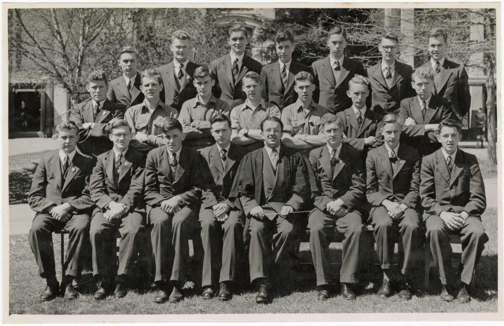

1881

CBHS established
Christchurch boys high is established in the arts center with 82 boys and 7 'masters'. School sports is done at lancaster park. The prime purpose of boys high was to prepare boys in an academical manner for the newly formed Canterbury College(now the University of Canterbury).
1883

First monitors appointed
CBHS' first monitors were appointed in 1883 sortly after the creation of the school, these monitors were made to give out fines and make sure the boys behaved.
1912